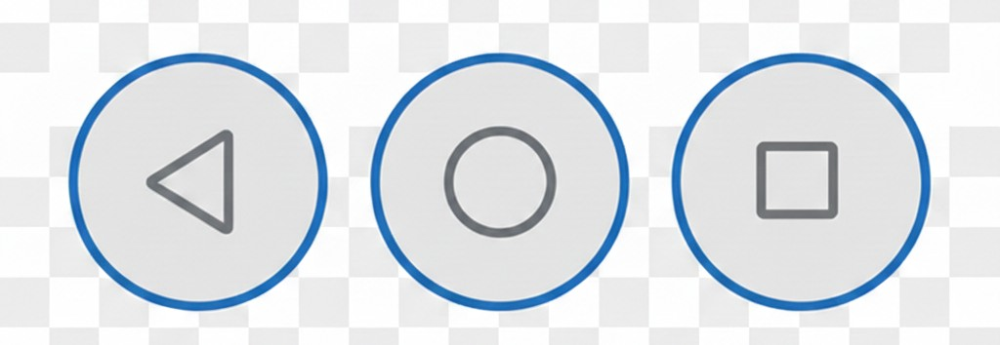
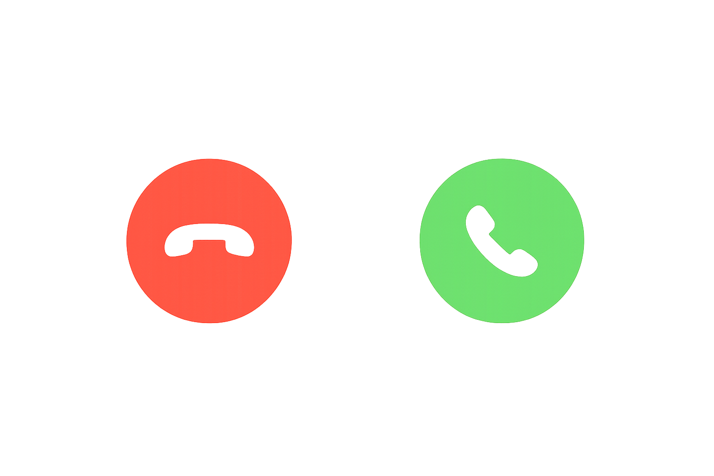
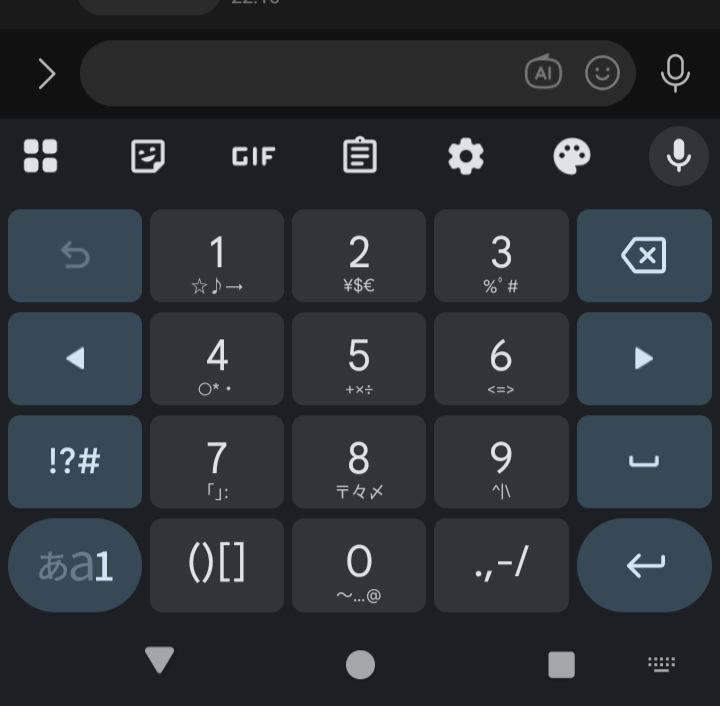

スマホにつける鍵です
パスキー

覚え方のコツ:中心から「左・上・右・下」の順に「い・う・え・お」と並んでいます。
Google検索画面を出して、以下のキーワードを入れてみましょう。 漢字カタカナ英数字混じりの練習です。

インターネットの使用量
動画はたくさん使う
LINEや文字は少ない
不安な人は「動画はWi-Fiで」
より安全にする
不具合を直す
新しくする
基本的に「更新」はOKで大丈夫
扇形があれば Wi-Fi
数字や4G/5Gなら モバイル通信です
ここは見るだけでOK
勝手に切れたりしません
質問です:
どちらがギガをたくさん使うでしょう？
正解:動画です
だから動画はWi-Fiで見ると安心
※ ほとんどのトラブルは、これで解決します。
⚠ 電源オフ・再起動は、これらがダメだった時の「最後の手段」です。
「ウイルスに感染」「今すぐ電話して」など、大きな音が鳴ることもあります。
スマホは 「机の上」 と同じです。 - よく使うものは「手前（ホーム画面）」に。 - 使わないものは「引き出し（フォルダ）」に。 - いらないものは「捨てる（削除）」。
「ピコンピコン」鳴り止まないお知らせを整理します。
忘れてしまった場合や確認したい場合は、以下の設定から見ることができます。
青葉区役所の時間を調べて、どれが「本物」か探してみましょう。
検索結果の一番上には、たまに 「広告」 や 「スポンサー」 と出ることがあります。
声だけで、以下のことを調べてみましょう。